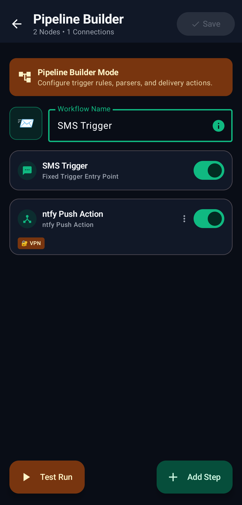
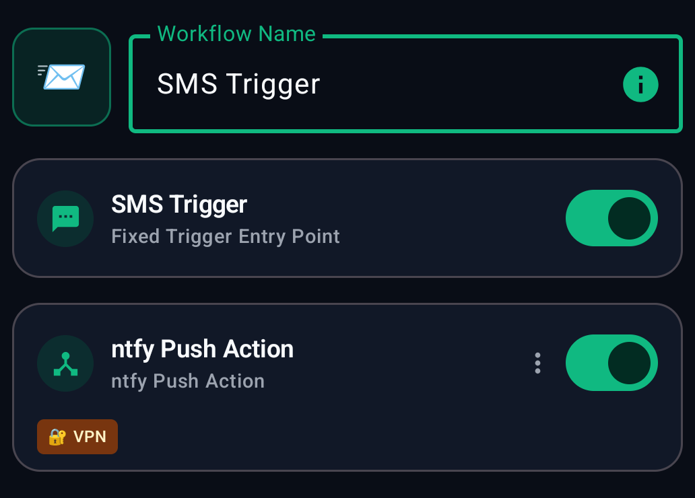
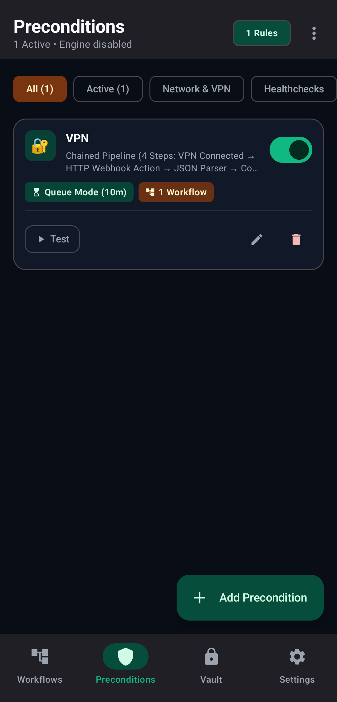
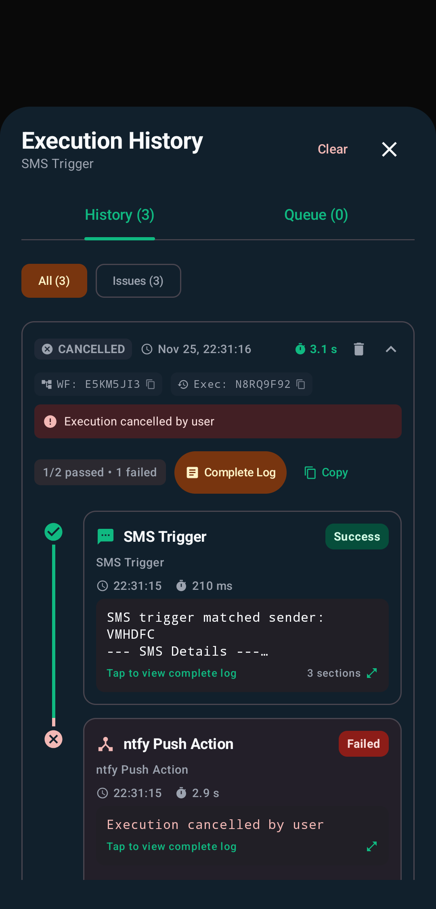
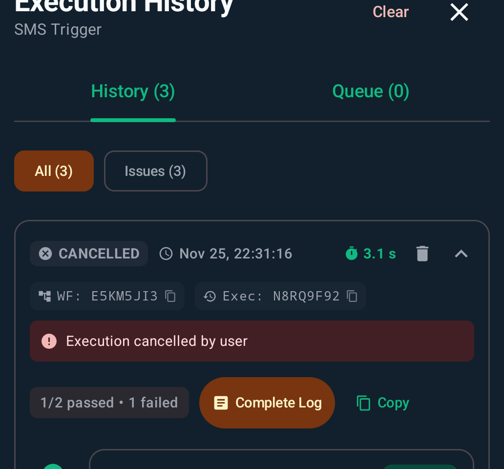
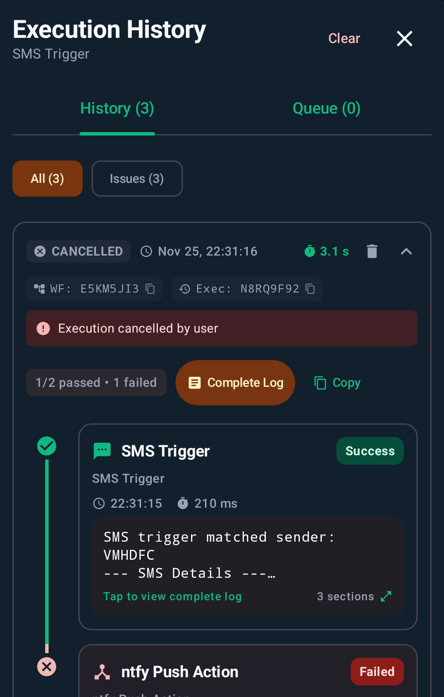
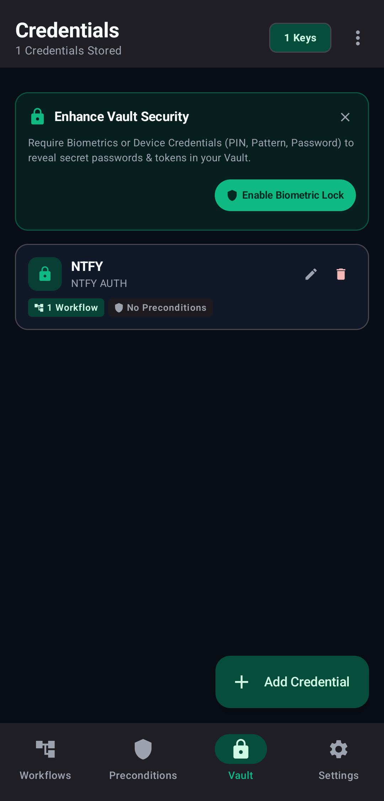
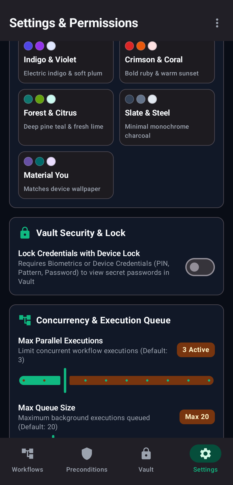
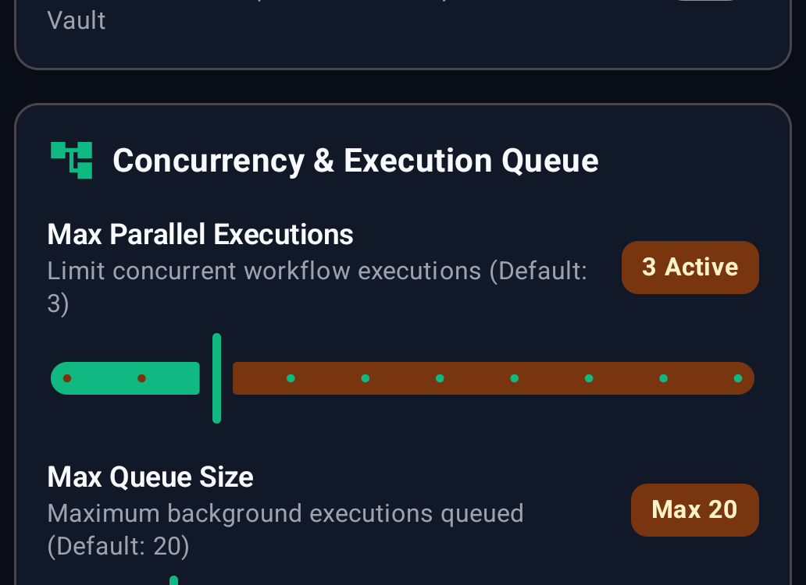
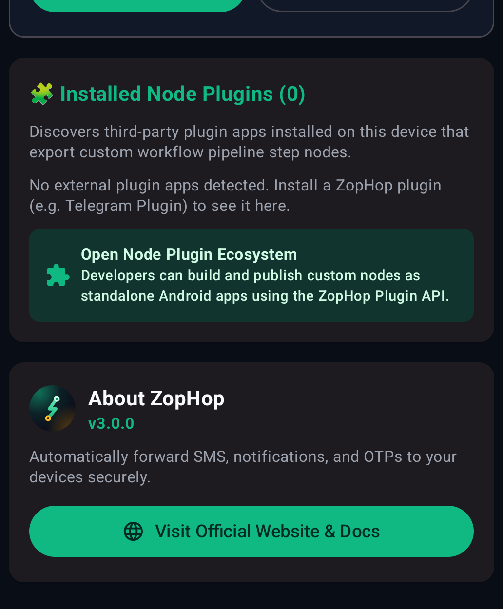

ZopHop v1.0.0 Documentation
ZopHop is an on-device Android automation and forwarding engine. Capture SMS, push notifications, calls, or cron schedules; validate chained preconditions; execute visual workflow graphs; and deliver alerts to ntfy, Gotify, Telegram, SMS, and HTTP webhooks.
1. Architecture & Multi-Module Structure
Events flow through a deterministic 4-stage pipeline: Trigger Capture → Precondition Evaluation → Graph Execution → Built-In or External AIDL Delivery.
Multi-Module Gradle Architecture
| Module | Responsibility |
|---|---|
:app | Main Android app, navigation shell, background services, Quick Settings Tile, and AppBackupBridge. |
:core:model | Domain models (Workflow, Precondition, Credential, Serialization.kt) — published via JitPack as com.github.aman400.zophop:core-model. |
:core:plugin-api | AIDL contract (INodePluginService), NodePluginManifest, NodePluginModule, ExecutionContext, HttpCredentialAdapter, ExecutionLogFormatter — published via JitPack as com.github.aman400.zophop:plugin-api. |
:core:data | Encrypted Vault storage (CredentialRepository), Room/local workflow & log persistence, SettingsRepository. |
:core:engine | WorkflowEngine, PreconditionEvaluator, UnifiedPluginRegistry, ExternalPluginExecutor, CurlCommandParser, core node executors. |
:core:ui | Material 3 theme engine (7 palettes + Material You), BiometricAuthHelper, shared Compose components. |
:feature:workflows | Workflows list, Pipeline Builder editor, live NodeExecutionStepper, and Complete Execution Log modal. |
:feature:preconditions | Reusable Preconditions list, Chained Pipeline editor, inline testing & safe cancellation. |
:feature:backup | Portable JSON backup export/import, dependency auto-resolution, PBKDF2/AES password encryption. |
:plugins:* | Built-in SPI modules (sms, notification, ntfy, gotify, call, gps). |
:external:telegram | Standalone external plugin APK (ZopHop-Telegram-Plugin-v1.0.0.apk) over AIDL IPC. |
:external:smtp | Standalone external plugin APK (ZopHop-SMTP-Plugin-v1.0.0.apk) for STARTTLS/SMTPS/Plain email delivery over AIDL IPC. |
2. Workflows & Visual Pipeline Builder
Each workflow is powered by a directed graph (WorkflowGraph) connecting Triggers, Parsers & Extractors, Logic / Hardware Checks, and Actions. Click any screenshot below to zoom.





- Conditional Branching: Edges carry
outputPort(main,true,false) so Condition Evaluators route branches independently. - Per-Node Preconditions: Attach reusable Vault preconditions (like
VPN) directly to individual delivery steps. - Per-Node Failure Policies: Choose
STOP_WORKFLOW,RETRY_WITH_BACKOFF, orCONTINUE_ON_FAILURE. - Dry-Run Test Mode: Tap Test Run inside the Pipeline Builder with simulated trigger fields (
testSender,testBody,testPayload,testTitle) before enabling live triggers.
3. Complete Node Catalog
Filter node categories below to inspect every built-in and plugin node's typeId, configuration options, and emitted ExecutionContext output variables.
| Node | typeId | Key Configuration | Output Variables |
|---|---|---|---|
| SMS Trigger | dev.zophop.plugin.sms.SMS_TRIGGER | Sender regex (.*HDFCBK.*), body keyword regex, simulated testSender/testBody | sender, body, header, text |
| App Notification | dev.zophop.plugin.notification.NOTIFICATION_TRIGGER | Package filter (com.whatsapp or .*), text regex, test fields | package_name, title, text, sender, body |
| Manual Trigger | MANUAL_TRIGGER | Simulated event JSON/text payload (testBody) | body, text, timestamp |
| Cron Schedule | CRON_TRIGGER | Interval/cron (every 15m, hourly, daily, 0 8 * * *) | body, text, sender, timestamp |
| Incoming Call | dev.zophop.plugin.call.CALL_TRIGGER | Caller number regex (.*555.*). Requires READ_PHONE_STATE | caller_number, sender, header |
| Node | typeId | Capabilities | Outputs |
|---|---|---|---|
| Parse Notification | PARSE_NOTIFICATION | Regex field extraction from notification text into outputKey | code, otp, custom key |
| Regex Parser | REGEX_PARSER | Capture group 1 and named groups (?<amount>...) | code, otp, named groups |
| JSON Parser | JSON_PARSER | Path extraction from http_response/body; strips Markdown fences | json_output, code, otp, custom key |
| Template Formatter | TEMPLATE_FORMATTER | Renders ${var} & {var} tokens into reusable payloads | formatted_payload, payload |
JSON Parser Query Syntax & 8 Target Types
- Nested & Bracket Keys:
data.user.id,data['x-api-status'] - Array & Negative Indices:
items[0].code,items[-1](last item),matrix[0][1] - Wildcard Projection:
users[*].name - Collection Lengths:
items.length,items.size,items.count - Recursive Deep Search:
..otp(finds first non-nullotpkey at any depth) - Target Types (
targetType):AUTO,STRING,NUMBER,DOUBLE,BOOLEAN,JSON_STRING,COUNT,ARRAY(withdefaultValuefallback).
- Condition Evaluator (
CONDITION): Branches onto"true"or"false"ports across 14 operators:- String:
EQUALS,NOT_EQUALS,CONTAINS,NOT_CONTAINS,STARTS_WITH,ENDS_WITH,REGEX_MATCH,NOT_REGEX_MATCH - Presence:
NOT_EMPTY,IS_EMPTY - Numeric:
GREATER_THAN,GREATER_THAN_OR_EQUAL,LESS_THAN,LESS_THAN_OR_EQUAL
- String:
- VPN Check (
VPN_CHECK): Inspectstun,wg,tailscale. Outputsvpn_connected,vpn_interface,vpn_type. - GPS Check (
GPS_CHECK): Verifies location hardware & captures coordinates. Outputsgps_enabled,latitude,longitude,accuracy,maps_url. - Internet Check (
INTERNET_CHECK): Verifies active connectivity (ANY,WIFI,CELLULAR). Outputsinternet_connected,network_type,is_metered. - Bluetooth Check (
BLUETOOTH_CHECK): Checks Bluetooth state & optional bonded device name. Outputsbluetooth_enabled,bluetooth_connected,connected_device_name,bonded_device_count. - SIM Check (
SIM_CHECK): Verifies SIM readiness & carrier name filter. Outputssim_ready,carrier_name,sim_count,is_roaming. - Battery Check (
BATTERY_CHECK): Enforces minimum battery % & optional charging state. Outputsbattery_percent,is_charging,charging_status.
| Action Node | typeId | Capabilities & Notes |
|---|---|---|
| ntfy Push | dev.zophop.plugin.ntfy.NTFY_ACTION | Topic, priority (1–5), title, tags, NTFY_AUTH / BEARER_TOKEN Vault auth. |
| Gotify Push | dev.zophop.plugin.gotify.GOTIFY_ACTION | Gotify server push with priority (1–10) & X-Gotify-Key (GOTIFY_AUTH). |
| HTTP Webhook | HTTP_ACTION | GET/POST/PUT/PATCH/DELETE/HEAD, headers, JSON/Form/Raw body, Vault auth, cURL Import. Outputs http_response, http_status. |
| System Notification | SEND_NOTIFICATION_ACTION | Displays local Android notification with ${variable} title/body templates. |
| Send SMS | dev.zophop.plugin.sms.SEND_SMS_ACTION | Sends outbound SMS via device SIM. Requires SEND_SMS permission. |
| Get GPS Location | dev.zophop.plugin.gps.GET_LOCATION_ACTION | Fetches coordinates and writes latitude, longitude, accuracy, maps_url. |
| Answer / Disconnect Call | dev.zophop.plugin.call.* | Rejects or answers incoming calls paired with CALL_TRIGGER (Android 9+). |
| Telegram Bot External APK | dev.zophop.plugin.telegram.TELEGRAM_ACTION | Sends messages via @BotFather token (TELEGRAM_AUTH). Requires ZopHop-Telegram-Plugin-v1.0.0.apk. |
| Send Email (SMTP) External APK | dev.zophop.plugin.smtp.SMTP_ACTION | Sends plain-text or HTML emails via STARTTLS, SMTPS, or Plain SMTP (SMTP_AUTH). Requires ZopHop-SMTP-Plugin-v1.0.0.apk. |
4. HTTP Webhook Action & Import from cURL
The HTTP Webhook editor provides clickable ${variable} chips, secret header masking, Vault credential adapters, and one-tap Import from cURL powered by CurlCommandParser.


- Methods:
-X/--request(automatically infersPOSTwhen body flags exist, orGETwith-G). - Headers & Auth:
-H/--header,-u user:pass(Basic Auth),-A(User-Agent),-b(Cookie),-e(Referer). - Payloads & Query Params:
-d/--data/--data-raw/--data-binary/-Fand URL query pairs.
5. Preconditions & Chained Check Pipelines
Attach reusable environmental preconditions to workflows or individual nodes so deliveries wait safely when a VPN tunnel or self-hosted service is offline.


7 Precondition Types
- Internet Check (
INTERNET_CHECK) — Active Wi-Fi / Cellular - VPN Check (
VPN_CHECK) —tun0,wg, Tailscale - Health Check (
HEALTH_CHECK) —GET/HEAD/POSTHTTP probe - SIM Check (
SIM_CHECK) — Carrier name & SIM slot - GPS & Battery Checks — Location enabled & min % / charging
- Chained Pipeline (
CHAINED_CHECK) — Multi-step sub-workflow guard
Failure Policies & 4 Backoff Curves
FAIL_IMMEDIATELY— Aborts run & logs failure reason.RETRY— Retries up tomaxRetrieswithFIXED,LINEAR,EXPONENTIAL, orRANDOMIZEDjitter backoff.QUEUE— Holds execution in WorkManager queue until satisfied orqueueTimeoutMinutesexpires.- Safe Cancellation — Ongoing tests/runs prompt
CancelExecutionConfirmDialogbefore aborting.
6. Execution Logs, Live Stepper, Queue & Cancellation
Track every live, queued, and historical workflow run down to millisecond step timings and redacted HTTP request/response blocks.




- Queue Actions: Tap Process Now, Retry from Failed Node, or Cancel (protected by confirmation dialog).
- Quick Settings Tile: Add SMS Automations (
WorkflowsTileService) to your Android Quick Settings shade to pause or resume automation in one tap.
7. Encrypted Credential Vault & Biometric Lock
Store tokens and API keys in AES-256-GCM EncryptedSharedPreferences backed by Android KeyStore MasterKey and optional Fingerprint / Device PIN gating via BiometricAuthHelper.


| Credential Type | Stored Fields | Usage |
|---|---|---|
BEARER_TOKEN | token | HTTP Webhooks (Authorization: Bearer ...), ntfy.sh, fallback for plugins |
BASIC_AUTH | username, password | HTTP Webhooks, self-hosted reverse proxies |
HEADER_SET | headers (multiline Key: Value) | Cloudflare Access, custom API keys |
NTFY_AUTH | serverUrl, topic, token | ntfy Push Action & HTTP Webhook adapter |
GOTIFY_AUTH | serverUrl, appToken | Gotify Push Action & HTTP Webhook adapter (X-Gotify-Key) |
Plugin Specs (e.g. TELEGRAM_AUTH, SMTP_AUTH) | Defined dynamically by plugins | Discovered automatically via CredentialSpecRegistry |
8. Settings, Themes, Concurrency & Portable Backups






- Selective Export & Dependency Resolution: Pick specific workflows and ZopHop automatically bundles referenced Vault credentials and Preconditions (
Auto-Include Dependencies). - Password-Encrypted Archives: Encrypt exported credentials with PBKDF2-HMAC-SHA256 + AES-256-GCM before sharing or saving to file.
- Import Conflict Policies: Choose
OVERWRITE,KEEP_BOTH, orSKIP_EXISTINGwhen restoring.
9. First-Time Setup & Self-Hosted Server Guides
- Download
ZopHop-v1.0.0.apk(and optionallyZopHop-Telegram-Plugin-v1.0.0.apk/ZopHop-SMTP-Plugin-v1.0.0.apk) from GitHub Releases. - On Google Play Protect prompts, tap More details → Install anyway.
- Open Settings & Permissions inside ZopHop to grant
RECEIVE_SMS, Notification Listener access,POST_NOTIFICATIONS(Android 13+), and Unrestricted battery usage.
ntfy (Docker Compose + ACLs)
Gotify (Docker Compose)
10. Indian Banking & 2FA OTP Filter Presets
| Bank / Service | Sender Regex | Extraction Regex | Template Payload |
|---|---|---|---|
| HDFC Bank | .*HDFCBK.* | \b\d{6}\b | [${sender}] OTP: ${code} |
| ICICI Bank | .*ICICIB.* | \b\d{6}\b | [${sender}] OTP: ${code} |
| SBI | .*SBINBK.* | \b\d{6}\b | [${sender}] OTP: ${code} |
| Axis Bank | .*AXISBK.* | \b\d{6}\b | [${sender}] OTP: ${code} |
| Google 2FA | Google | G-(\d{6}) | [Google] Code: ${code} |
11. Testing with ADB Emulator
Simulate incoming OTP SMS messages on Android Studio Emulator or inspect external plugin discovery logs:
12. Troubleshooting & OEM Battery Optimization Fixes
Xiaomi / Redmi / POCO (MIUI & HyperOS)
- Autostart: Security App → Permissions → Background autostart → Enable ZopHop (and plugin APKs).
- No Restrictions: Settings → Apps → Manage Apps → ZopHop → Battery Saver → No Restrictions.
- Lock in Recents: Open Recents → Press & hold ZopHop → Tap Lock.
Samsung Galaxy (One UI)
- Settings → Apps → ZopHop → Battery → Unrestricted.
- Settings → Device care → Battery → Background usage limits → Never auto sleeping apps → Add ZopHop.
OnePlus / Oppo / Realme (OxygenOS & ColorOS)
- Settings → Apps → App Management → ZopHop → Battery usage → Enable Allow background activity & Allow auto launch.
Google Pixel / Stock Android
- Settings → Apps → ZopHop → App battery usage → Allow background usage → Unrestricted.
13. Security, Privacy & Data Hardening
- Hardware-Backed Encryption: Vault secrets use AES-256-GCM
EncryptedSharedPreferenceswith Android KeyStoreMasterKey. - Screen Protection (
FLAG_SECURE): Release builds block screenshots and screen recordings across the app. - Log Redaction:
ExecutionLogFormattermasksAuthorization,X-Gotify-Key,X-API-Key,Cookie, and token headers. - Zero Telemetry & Cloud Backup Opt-Out:
android:allowBackup="false"disables cloud auto-backups; zero analytics SDKs exist. - URL Credential Guard:
HttpActionExecutorrejects URLs containing embeddeduser:pass@credentials.